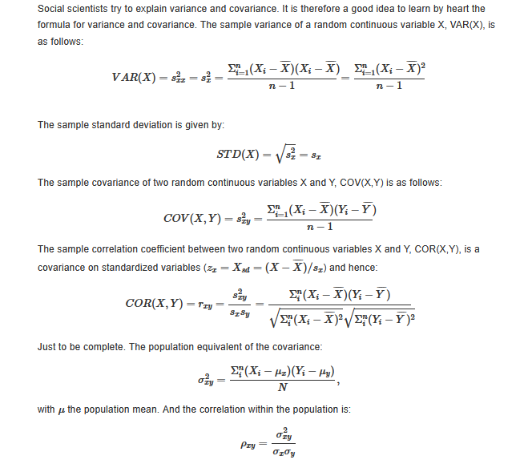

library(knitr)
knitr::opts_chunk$set(
echo = TRUE,
warning = FALSE,
message = FALSE,
comment = "#>",
cache = TRUE
)
options(width = 100)
# Setup for interactive 3D plots (optional)
if (requireNamespace("rgl", quietly = TRUE)) {
rgl::setupKnitr()
}
# Define the colorize function for use later in the document
colorize <- function(x, color) {
sprintf("<span style='color: %s;'>%s</span>", color, x)
}
Last compiled on October, 2025
Date: 5 September
2025
Week 1
Assignments:
Review:
Chapter 1, Appendix A
Assignment 1.6
Appendix B
Variance and Covariance
Formulate research questions
Find relevant research articles/literature
This is just an example page of your lab journal. You can journal the assignments
of the first day here.
Chapter 1 and
Appendix A
Key Terms
Social Network: “a finite set of actors and the relation(s)
defined on this set. The actors are social entities (people,
organizations, countries, etc.) whose specific ties (friendship,
competition, collaboration, etc.), constitute the network. (, as quoted
from Wasserman and Faust 1994 : 20).”
Social Network Perspective: Look at nodes, ties, and relational
effects within a network.
Nodes: A social agent, also known as one actor or
individual,
Dyads: Type of social network, smallest possible type of network
is between two social agents.
Undirected relationships: Have 2 possible configurations, present
and not present.
Directed relationships: Have 4 configurations, depending on the
presence and direction of the relation.
Egonets: Type of social network, comprised of nodes/actors that
have relationships with ego.
Ego: The node/actor of focus within a social network
Alter: The other nodes/actors relating to an ego within a social
network
1 Degree Network: When there is one type of tie; for example, one
ego connected to several alters.
1.5 Degree Network: When the alters of a 1 degree network become
connected.
2 Degree Network: When, in mapping the alters, additional nodes
are included that are not directly connected to the ego.
Complete nets (“Socionets”): Type of social network, full and
complete in the sense that we know all the nodes and connections of
nodes;
Multiple-mode networks: Networks with two different types of
nodes, such that relationships between two different types of nodes are
present.
Multiplex networks: Multiple types of relationships are
present.
Weighted networks: When the relationships between nodes are not
binary, but can vary in strength;
Assignment
1.6
Go back to your latest paper, assignment or theses in which you
investigated a research topic fitting the broad research themes of
inequality, cohesion and diversity. You could also take one of your
current projects you are working on if you like. Identify the social
problem.
Please describe what a naive approach would be to take on this
social problem. Thus, being oblivious of a social network
perspective.
Please try to identify how your project could be improved by
taking a social network perspective. Make sure to discuss the
theoretical, data, and methodological consequences.
Can you discover a trend in the existing literature with respect
to taking a social network perspective
Topic of Interest: Renewable energy adoption on a meso-level
Background: Renewable energy adoption is an integral base of
phasing out fossil-fuel dependence and developing a circular economy,
ideal for both environmental health and climate goals as well as closing
equity and opportunity gaps. This comes with the increasing dependence
on modern technologies as well as electricity based production
methods.
Research Question: To what extent are municipalities able to adopt
and deploy renewable energy projects within their domain across the
Netherlands?
Naive Approach: Looking at the richest municipalities vs the
poorest municipalities within a country that is known for renewable
energy adoption, and compare it to their rate of renewable energy
adoption/investment in circularity initiatives.
Social Network Perspective: Develop a multiple-mode weighted
network, looking at both municipality (one type of node) and household
within that municipality (another type of node) amounts of investment
per average income in the municipality, with relationships conveyed by
the amount of investment. This could then compare across municipalities
within a province, or across the Netherlands. Separately, a policy
analysis informing province and municipal renewable energy adoption
would be conducted as critical context. Equity and income gaps would
also be assessed as notable influences on household ability to invest in
renewables. This would be an improvement, as it takes into account the
complex web of nodes influencing each other, as well as considers the
non-social elements that impact renewable energy adoption.
Sample Questions: - Descriptive Questions: What types of ties exist
between municipalities that have adopted similar renewable energy
policies (geographic proximity, political affiliation, economic
partnerships)? - How do renewable energy adoption rates vary across
different network positions for both municipalities and households?
(does adoption ever win out over finances?) - Explanatory Questions: Do
municipalities learn from their network neighbors’ policy experiences,
and does this learning improve policy effectiveness? - Looking at
Multilevel Dynamics: Do municipalities with stronger internal household
networks show different patterns of policy learning from external
municipal networks? (do household-household ties influence strength of
municipality-household ties?)
Appendix
B
Part of homework to review :)!
Variance and
Covariance
install.packages("magick")
library(magick)
img <- image_read("C:/Users/paigek/Pictures/SNASS_Covariance.png")
print(img)
#> format width height colorspace matte filesize density
#> 1 PNG 664 589 sRGB TRUE 54989 57x57

Beginning of
Research
Dataset
Background
Data on sociologists and political scientists collected from all
Universities in the Netherlands, with faculty members are the nodes.
Includes characteristics of nodes (gender, age, position), research
output/publications, and collaborations. Also have time-stamped data on
ego level, with all the papers also time stamped for publication date.
Data collected over 3 years. Prioritize investigations of inequalities
in networks (gender inequality, segregation, etc).
Preliminary
Research Questions
What impact does ethnic diversity in departments have on cross
department collaboration?
Do the researcher’s # of collaborations within department vs. across
departments differ depending on their ethnic diversity across Dutch
universities?
Do the department’s proportion of within-department collaboration vs
beyond department collaboration change depening on the ethnic diversity
of the department across universities in the netherlands?
How is this impacted by how long researchers have been at the
university?
Researcher - # of collabarations within department # of
collaborations across department Ethnic background
Questions for the
group:
Is there a straight-forward way to track ethnic diversity as an
ego-level characteristic within our dataset?
Is this an interesting research question? Would be other
descriptive research questions also be interesting here?
Relevant
Literature
https://doi.org/10.1371/journal.pone.0283106
Fagan, J., Eddens, K. S., Dolly, J., Vanderford, N. L., Weiss, H.,
& Levens, J. S. (2018). Assessing Research Collaboration through
Co-authorship Network Analysis. The journal of research administration,
49(1), 76–99. https://pmc.ncbi.nlm.nih.gov/articles/PMC6703830/
Santos, J.M., Horta, H. & Feng, S. Homophily and its effects on
collaborations and repeated collaborations: a study across scientific
fields. Scientometrics 129, 1801–1823 (2024). https://doi.org/10.1007/s11192-024-04950-3
https://www.sciencedirect.com/science/article/abs/pii/S0378873315000453?via%3Dihub
Testing code in
class
test code
h2
this course
h3
heading 3
list
print("Hello Lab Journal")
#> [1] "Hello Lab Journal"
LS0tDQp0aXRsZTogIkpvdXJuYWwgMSINCiNiaWJsaW9ncmFwaHk6IHJlZmVyZW5jZXMuYmliDQphdXRob3I6ICJQYWlnZSBLZW1wZXIiDQoNCiMgb3V0cHV0Og0KICAjIGh0bWxfZG9jdW1lbnQ6DQogICAgIyBjc3M6IHN0eWxlcy5jc3MNCi0tLQ0KDQpgYGB7cn0NCg0KbGlicmFyeShrbml0cikNCmtuaXRyOjpvcHRzX2NodW5rJHNldCgNCiAgZWNobyA9IFRSVUUsDQogIHdhcm5pbmcgPSBGQUxTRSwNCiAgbWVzc2FnZSA9IEZBTFNFLA0KICBjb21tZW50ID0gIiM+IiwNCiAgY2FjaGUgPSBUUlVFDQopDQoNCm9wdGlvbnMod2lkdGggPSAxMDApDQpgYGANCg0KYGBge3J9DQojIFNldHVwIGZvciBpbnRlcmFjdGl2ZSAzRCBwbG90cyAob3B0aW9uYWwpDQppZiAocmVxdWlyZU5hbWVzcGFjZSgicmdsIiwgcXVpZXRseSA9IFRSVUUpKSB7DQogIHJnbDo6c2V0dXBLbml0cigpDQp9DQoNCiMgRGVmaW5lIHRoZSBjb2xvcml6ZSBmdW5jdGlvbiBmb3IgdXNlIGxhdGVyIGluIHRoZSBkb2N1bWVudA0KIGNvbG9yaXplIDwtIGZ1bmN0aW9uKHgsIGNvbG9yKSB7DQogIHNwcmludGYoIjxzcGFuIHN0eWxlPSdjb2xvcjogJXM7Jz4lczwvc3Bhbj4iLCBjb2xvciwgeCkNCn0NCmBgYA0KDQpgYGB7ciwgZ2xvYmFsc2V0dGluZ3MsIGVjaG89RkFMU0UsIHdhcm5pbmc9RkFMU0UsIHJlc3VsdHM9J2hpZGUnfQ0KbGlicmFyeShrbml0cikNCg0Ka25pdHI6Om9wdHNfY2h1bmskc2V0KGVjaG8gPSBUUlVFKQ0Kb3B0c19jaHVuayRzZXQodGlkeS5vcHRzPWxpc3Qod2lkdGguY3V0b2ZmPTEwMCksdGlkeT1UUlVFLCB3YXJuaW5nID0gRkFMU0UsIG1lc3NhZ2UgPSBGQUxTRSxjb21tZW50ID0gIiM+IiwgY2FjaGU9VFJVRSwgY2xhc3Muc291cmNlPWMoInRlc3QiKSwgY2xhc3Mub3V0cHV0PWMoInRlc3QyIikpDQpvcHRpb25zKHdpZHRoID0gMTAwKQ0KcmdsOjpzZXR1cEtuaXRyKCkNCg0KDQpjb2xvcml6ZSA8LSBmdW5jdGlvbih4LCBjb2xvcikge3NwcmludGYoIjxzcGFuIHN0eWxlPSdjb2xvcjogJXM7Jz4lczwvc3Bhbj4iLCBjb2xvciwgeCkgfQ0KDQpgYGANCg0KYGBge3Iga2xpcHB5LCBlY2hvPUZBTFNFLCBpbmNsdWRlPVRSVUV9DQoja2xpcHB5OjprbGlwcHkocG9zaXRpb24gPSBjKCd0b3AnLCAncmlnaHQnKSkNCiNrbGlwcHk6OmtsaXBweShjb2xvciA9ICdkYXJrcmVkJykNCiNrbGlwcHk6OmtsaXBweSh0b29sdGlwX21lc3NhZ2UgPSAnQ2xpY2sgdG8gY29weScsIHRvb2x0aXBfc3VjY2VzcyA9ICdEb25lJykNCmBgYA0KDQpMYXN0IGNvbXBpbGVkIG9uIGByIGZvcm1hdChTeXMudGltZSgpLCAnJUIsICVZJylgDQoNCjxicj4NCg0KLS0tLS0tLS0tLS0tLS0tLS0tLS0tLS0tLS0tLS0tLS0tLS0tLS0tLS0tLS0tLS0tLS0tLS0tLS0tLS0tLS0tLS0tLS0tLS0tDQoNCioqRGF0ZTogYHIgY29sb3JpemUoIjUgU2VwdGVtYmVyIDIwMjUiLCAibmF2eSIpYCoqDQoNCiMgV2VlayAxIEFzc2lnbm1lbnRzOg0KDQpSZXZpZXc6DQoNCjEuICBDaGFwdGVyIDEsIEFwcGVuZGl4IEENCg0KMi4gIEFzc2lnbm1lbnQgMS42DQoNCjMuICBBcHBlbmRpeCBCDQoNCjQuICBWYXJpYW5jZSBhbmQgQ292YXJpYW5jZQ0KDQp8ICAgICAgICAgICAgICAgICAgICAgICAgfA0KfDotLS0tLS0tLS0tLS0tLS0tLS0tLS0tLXwNCnwgQmVnaW5uaW5nIG9mIHJlc2VhcmNoOiB8DQoNCjUuICBGb3JtdWxhdGUgcmVzZWFyY2ggcXVlc3Rpb25zDQoNCjYuICBGaW5kIHJlbGV2YW50IHJlc2VhcmNoIGFydGljbGVzL2xpdGVyYXR1cmUNCg0KKlRoaXMgaXMganVzdCBhbiBleGFtcGxlIHBhZ2Ugb2YgeW91ciBgciBjb2xvcml6ZSgibGFiIGpvdXJuYWwiLCAicmVkIilgLiBZb3UgY2FuIGpvdXJuYWwgdGhlIGFzc2lnbm1lbnRzIG9mIHRoZSBmaXJzdCBkYXkgaGVyZS4qDQoNCi0tLS0tLS0tLS0tLS0tLS0tLS0tLS0tLS0tLS0tLS0tLS0tLS0tLS0tLS0tLS0tLS0tLS0tLS0tLS0tLS0tLS0tLS0tLS0tLQ0KDQojIyBDaGFwdGVyIDEgYW5kIEFwcGVuZGl4IEENCg0KS2V5IFRlcm1zDQoNCi0gICBTb2NpYWwgTmV0d29yazogImEgZmluaXRlIHNldCBvZiBhY3RvcnMgYW5kIHRoZSByZWxhdGlvbihzKSBkZWZpbmVkIG9uIHRoaXMgc2V0LiBUaGUgYWN0b3JzIGFyZSBzb2NpYWwgZW50aXRpZXMgKHBlb3BsZSwgb3JnYW5pemF0aW9ucywgY291bnRyaWVzLCBldGMuKSB3aG9zZSBzcGVjaWZpYyB0aWVzIChmcmllbmRzaGlwLCBjb21wZXRpdGlvbiwgY29sbGFib3JhdGlvbiwgZXRjLiksIGNvbnN0aXR1dGUgdGhlIG5ldHdvcmsuICgsIGFzIHF1b3RlZCBmcm9tIFdhc3Nlcm1hbiBhbmQgRmF1c3QgMTk5NCA6IDIwKS4iDQoNCi0gICBTb2NpYWwgTmV0d29yayBQZXJzcGVjdGl2ZTogTG9vayBhdCBub2RlcywgdGllcywgYW5kIHJlbGF0aW9uYWwgZWZmZWN0cyB3aXRoaW4gYSBuZXR3b3JrLg0KDQotICAgTm9kZXM6IEEgc29jaWFsIGFnZW50LCBhbHNvIGtub3duIGFzIG9uZSBhY3RvciBvciBpbmRpdmlkdWFsLA0KDQotICAgRHlhZHM6IFR5cGUgb2Ygc29jaWFsIG5ldHdvcmssIHNtYWxsZXN0IHBvc3NpYmxlIHR5cGUgb2YgbmV0d29yayBpcyBiZXR3ZWVuIHR3byBzb2NpYWwgYWdlbnRzLg0KDQotICAgVW5kaXJlY3RlZCByZWxhdGlvbnNoaXBzOiBIYXZlIDIgcG9zc2libGUgY29uZmlndXJhdGlvbnMsIHByZXNlbnQgYW5kIG5vdCBwcmVzZW50Lg0KDQotICAgRGlyZWN0ZWQgcmVsYXRpb25zaGlwczogSGF2ZSA0IGNvbmZpZ3VyYXRpb25zLCBkZXBlbmRpbmcgb24gdGhlIHByZXNlbmNlIGFuZCBkaXJlY3Rpb24gb2YgdGhlIHJlbGF0aW9uLg0KDQotICAgRWdvbmV0czogVHlwZSBvZiBzb2NpYWwgbmV0d29yaywgY29tcHJpc2VkIG9mIG5vZGVzL2FjdG9ycyB0aGF0IGhhdmUgcmVsYXRpb25zaGlwcyB3aXRoIGVnby4NCg0KLSAgIEVnbzogVGhlIG5vZGUvYWN0b3Igb2YgZm9jdXMgd2l0aGluIGEgc29jaWFsIG5ldHdvcmsNCg0KLSAgIEFsdGVyOiBUaGUgb3RoZXIgbm9kZXMvYWN0b3JzIHJlbGF0aW5nIHRvIGFuIGVnbyB3aXRoaW4gYSBzb2NpYWwgbmV0d29yaw0KDQotICAgMSBEZWdyZWUgTmV0d29yazogV2hlbiB0aGVyZSBpcyBvbmUgdHlwZSBvZiB0aWU7IGZvciBleGFtcGxlLCBvbmUgZWdvIGNvbm5lY3RlZCB0byBzZXZlcmFsIGFsdGVycy4NCg0KLSAgIDEuNSBEZWdyZWUgTmV0d29yazogV2hlbiB0aGUgYWx0ZXJzIG9mIGEgMSBkZWdyZWUgbmV0d29yayBiZWNvbWUgY29ubmVjdGVkLg0KDQotICAgMiBEZWdyZWUgTmV0d29yazogV2hlbiwgaW4gbWFwcGluZyB0aGUgYWx0ZXJzLCBhZGRpdGlvbmFsIG5vZGVzIGFyZSBpbmNsdWRlZCB0aGF0IGFyZSBub3QgZGlyZWN0bHkgY29ubmVjdGVkIHRvIHRoZSBlZ28uDQoNCi0gICBDb21wbGV0ZSBuZXRzICgiU29jaW9uZXRzIik6IFR5cGUgb2Ygc29jaWFsIG5ldHdvcmssIGZ1bGwgYW5kIGNvbXBsZXRlIGluIHRoZSBzZW5zZSB0aGF0IHdlIGtub3cgYWxsIHRoZSBub2RlcyBhbmQgY29ubmVjdGlvbnMgb2Ygbm9kZXM7DQoNCi0gICBNdWx0aXBsZS1tb2RlIG5ldHdvcmtzOiBOZXR3b3JrcyB3aXRoIHR3byBkaWZmZXJlbnQgdHlwZXMgb2Ygbm9kZXMsIHN1Y2ggdGhhdCByZWxhdGlvbnNoaXBzIGJldHdlZW4gdHdvIGRpZmZlcmVudCB0eXBlcyBvZiBub2RlcyBhcmUgcHJlc2VudC4NCg0KLSAgIE11bHRpcGxleCBuZXR3b3JrczogTXVsdGlwbGUgdHlwZXMgb2YgcmVsYXRpb25zaGlwcyBhcmUgcHJlc2VudC4NCg0KLSAgIFdlaWdodGVkIG5ldHdvcmtzOiBXaGVuIHRoZSByZWxhdGlvbnNoaXBzIGJldHdlZW4gbm9kZXMgYXJlIG5vdCBiaW5hcnksIGJ1dCBjYW4gdmFyeSBpbiBzdHJlbmd0aDsNCg0KOjo6IENpdGF0aW9uczoNCldhc3Nlcm1hbiwgUy4sIGFuZCBLLiBGYXVzdC4gMTk5NC4gU29jaWFsIE5ldHdvcmsgQW5hbHlzaXM6IE1ldGhvZHMgYW5kIEFwcGxpY2F0aW9ucy4gU3RydWN0dXJhbCBBbmFseXNpcyBpbiB0aGUgU29jaWFsIFNjaWVuY2VzLiBDYW1icmlkZ2UgVW5pdmVyc2l0eSBQcmVzcy4gPGh0dHBzOi8vYm9va3MuZ29vZ2xlLm5sL2Jvb2tzP2lkPXdzTWdBd0FBUUJBSj4uDQo6OjoNCg0KLS0tLS0tLS0tLS0tLS0tLS0tLS0tLS0tLS0tLS0tLS0tLS0tLS0tLS0tLS0tLS0tLS0tLS0tLS0tLS0tLS0tLS0tLS0tLS0tDQoNCiMjICoqQXNzaWdubWVudCAxLjYqKg0KDQotICAgR28gYmFjayB0byB5b3VyIGxhdGVzdCBwYXBlciwgYXNzaWdubWVudCBvciB0aGVzZXMgaW4gd2hpY2ggeW91IGludmVzdGlnYXRlZCBhIHJlc2VhcmNoIHRvcGljIGZpdHRpbmcgdGhlIGJyb2FkIHJlc2VhcmNoIHRoZW1lcyBvZiBpbmVxdWFsaXR5LCBjb2hlc2lvbiBhbmQgZGl2ZXJzaXR5LiBZb3UgY291bGQgYWxzbyB0YWtlIG9uZSBvZiB5b3VyIGN1cnJlbnQgcHJvamVjdHMgeW91IGFyZSB3b3JraW5nIG9uIGlmIHlvdSBsaWtlLiBJZGVudGlmeSB0aGUgc29jaWFsIHByb2JsZW0uDQoNCi0gICBQbGVhc2UgZGVzY3JpYmUgd2hhdCBhIG5haXZlIGFwcHJvYWNoIHdvdWxkIGJlIHRvIHRha2Ugb24gdGhpcyBzb2NpYWwgcHJvYmxlbS4gVGh1cywgYmVpbmcgb2JsaXZpb3VzIG9mIGEgc29jaWFsIG5ldHdvcmsgcGVyc3BlY3RpdmUuDQoNCjwhLS0gLS0+DQoNCi0gICBQbGVhc2UgdHJ5IHRvIGlkZW50aWZ5IGhvdyB5b3VyIHByb2plY3QgY291bGQgYmUgaW1wcm92ZWQgYnkgdGFraW5nIGEgc29jaWFsIG5ldHdvcmsgcGVyc3BlY3RpdmUuIE1ha2Ugc3VyZSB0byBkaXNjdXNzIHRoZSB0aGVvcmV0aWNhbCwgZGF0YSwgYW5kIG1ldGhvZG9sb2dpY2FsIGNvbnNlcXVlbmNlcy4NCg0KLSAgIENhbiB5b3UgZGlzY292ZXIgYSB0cmVuZCBpbiB0aGUgZXhpc3RpbmcgbGl0ZXJhdHVyZSB3aXRoIHJlc3BlY3QgdG8gdGFraW5nIGEgc29jaWFsIG5ldHdvcmsgcGVyc3BlY3RpdmUNCg0KVG9waWMgb2YgSW50ZXJlc3Q6IFJlbmV3YWJsZSBlbmVyZ3kgYWRvcHRpb24gb24gYSBtZXNvLWxldmVsDQoNCipCYWNrZ3JvdW5kOiBSZW5ld2FibGUgZW5lcmd5IGFkb3B0aW9uIGlzIGFuIGludGVncmFsIGJhc2Ugb2YgcGhhc2luZyBvdXQgZm9zc2lsLWZ1ZWwgZGVwZW5kZW5jZSBhbmQgZGV2ZWxvcGluZyBhIGNpcmN1bGFyIGVjb25vbXksIGlkZWFsIGZvciBib3RoIGVudmlyb25tZW50YWwgaGVhbHRoIGFuZCBjbGltYXRlIGdvYWxzIGFzIHdlbGwgYXMgY2xvc2luZyBlcXVpdHkgYW5kIG9wcG9ydHVuaXR5IGdhcHMuIFRoaXMgY29tZXMgd2l0aCB0aGUgaW5jcmVhc2luZyBkZXBlbmRlbmNlIG9uIG1vZGVybiB0ZWNobm9sb2dpZXMgYXMgd2VsbCBhcyBlbGVjdHJpY2l0eSBiYXNlZCBwcm9kdWN0aW9uIG1ldGhvZHMuKg0KDQpSZXNlYXJjaCBRdWVzdGlvbjogVG8gd2hhdCBleHRlbnQgYXJlIG11bmljaXBhbGl0aWVzIGFibGUgdG8gYWRvcHQgYW5kIGRlcGxveSByZW5ld2FibGUgZW5lcmd5IHByb2plY3RzIHdpdGhpbiB0aGVpciBkb21haW4gYWNyb3NzIHRoZSBOZXRoZXJsYW5kcz8NCg0KLSAgIE5haXZlIEFwcHJvYWNoOiBMb29raW5nIGF0IHRoZSByaWNoZXN0IG11bmljaXBhbGl0aWVzIHZzIHRoZSBwb29yZXN0IG11bmljaXBhbGl0aWVzIHdpdGhpbiBhIGNvdW50cnkgdGhhdCBpcyBrbm93biBmb3IgcmVuZXdhYmxlIGVuZXJneSBhZG9wdGlvbiwgYW5kIGNvbXBhcmUgaXQgdG8gdGhlaXIgcmF0ZSBvZiByZW5ld2FibGUgZW5lcmd5IGFkb3B0aW9uL2ludmVzdG1lbnQgaW4gY2lyY3VsYXJpdHkgaW5pdGlhdGl2ZXMuDQoNCi0gICBTb2NpYWwgTmV0d29yayBQZXJzcGVjdGl2ZTogRGV2ZWxvcCBhIG11bHRpcGxlLW1vZGUgd2VpZ2h0ZWQgbmV0d29yaywgbG9va2luZyBhdCBib3RoIG11bmljaXBhbGl0eSAob25lIHR5cGUgb2Ygbm9kZSkgYW5kIGhvdXNlaG9sZCB3aXRoaW4gdGhhdCBtdW5pY2lwYWxpdHkgKGFub3RoZXIgdHlwZSBvZiBub2RlKSBhbW91bnRzIG9mIGludmVzdG1lbnQgcGVyIGF2ZXJhZ2UgaW5jb21lIGluIHRoZSBtdW5pY2lwYWxpdHksIHdpdGggcmVsYXRpb25zaGlwcyBjb252ZXllZCBieSB0aGUgYW1vdW50IG9mIGludmVzdG1lbnQuIFRoaXMgY291bGQgdGhlbiBjb21wYXJlIGFjcm9zcyBtdW5pY2lwYWxpdGllcyB3aXRoaW4gYSBwcm92aW5jZSwgb3IgYWNyb3NzIHRoZSBOZXRoZXJsYW5kcy4gU2VwYXJhdGVseSwgYSBwb2xpY3kgYW5hbHlzaXMgaW5mb3JtaW5nIHByb3ZpbmNlIGFuZCBtdW5pY2lwYWwgcmVuZXdhYmxlIGVuZXJneSBhZG9wdGlvbiB3b3VsZCBiZSBjb25kdWN0ZWQgYXMgY3JpdGljYWwgY29udGV4dC4gRXF1aXR5IGFuZCBpbmNvbWUgZ2FwcyB3b3VsZCBhbHNvIGJlIGFzc2Vzc2VkIGFzIG5vdGFibGUgaW5mbHVlbmNlcyBvbiBob3VzZWhvbGQgYWJpbGl0eSB0byBpbnZlc3QgaW4gcmVuZXdhYmxlcy4gVGhpcyB3b3VsZCBiZSBhbiBpbXByb3ZlbWVudCwgYXMgaXQgdGFrZXMgaW50byBhY2NvdW50IHRoZSBjb21wbGV4IHdlYiBvZiBub2RlcyBpbmZsdWVuY2luZyBlYWNoIG90aGVyLCBhcyB3ZWxsIGFzIGNvbnNpZGVycyB0aGUgbm9uLXNvY2lhbCBlbGVtZW50cyB0aGF0IGltcGFjdCByZW5ld2FibGUgZW5lcmd5IGFkb3B0aW9uLg0KDQpTYW1wbGUgUXVlc3Rpb25zOiAtIERlc2NyaXB0aXZlIFF1ZXN0aW9uczogV2hhdCB0eXBlcyBvZiB0aWVzIGV4aXN0IGJldHdlZW4gbXVuaWNpcGFsaXRpZXMgdGhhdCBoYXZlIGFkb3B0ZWQgc2ltaWxhciByZW5ld2FibGUgZW5lcmd5IHBvbGljaWVzIChnZW9ncmFwaGljIHByb3hpbWl0eSwgcG9saXRpY2FsIGFmZmlsaWF0aW9uLCBlY29ub21pYyBwYXJ0bmVyc2hpcHMpPyAtIEhvdyBkbyByZW5ld2FibGUgZW5lcmd5IGFkb3B0aW9uIHJhdGVzIHZhcnkgYWNyb3NzIGRpZmZlcmVudCBuZXR3b3JrIHBvc2l0aW9ucyBmb3IgYm90aCBtdW5pY2lwYWxpdGllcyBhbmQgaG91c2Vob2xkcz8gKGRvZXMgYWRvcHRpb24gZXZlciB3aW4gb3V0IG92ZXIgZmluYW5jZXM/KSAtIEV4cGxhbmF0b3J5IFF1ZXN0aW9uczogRG8gbXVuaWNpcGFsaXRpZXMgbGVhcm4gZnJvbSB0aGVpciBuZXR3b3JrIG5laWdoYm9ycycgcG9saWN5IGV4cGVyaWVuY2VzLCBhbmQgZG9lcyB0aGlzIGxlYXJuaW5nIGltcHJvdmUgcG9saWN5IGVmZmVjdGl2ZW5lc3M/IC0gTG9va2luZyBhdCBNdWx0aWxldmVsIER5bmFtaWNzOiBEbyBtdW5pY2lwYWxpdGllcyB3aXRoIHN0cm9uZ2VyIGludGVybmFsIGhvdXNlaG9sZCBuZXR3b3JrcyBzaG93IGRpZmZlcmVudCBwYXR0ZXJucyBvZiBwb2xpY3kgbGVhcm5pbmcgZnJvbSBleHRlcm5hbCBtdW5pY2lwYWwgbmV0d29ya3M/IChkbyBob3VzZWhvbGQtaG91c2Vob2xkIHRpZXMgaW5mbHVlbmNlIHN0cmVuZ3RoIG9mIG11bmljaXBhbGl0eS1ob3VzZWhvbGQgdGllcz8pDQoNCiMjICoqQXBwZW5kaXggQioqDQpQYXJ0IG9mIGhvbWV3b3JrIHRvIHJldmlldyA6KSENCg0KIyMgVmFyaWFuY2UgYW5kIENvdmFyaWFuY2UNCg0KYGBge3J9DQppbnN0YWxsLnBhY2thZ2VzKCJtYWdpY2siKQ0KbGlicmFyeShtYWdpY2spDQppbWcgPC0gaW1hZ2VfcmVhZCgiQzovVXNlcnMvcGFpZ2VrL1BpY3R1cmVzL1NOQVNTX0NvdmFyaWFuY2UucG5nIikNCnByaW50KGltZykNCg0KDQpgYGANCg0KLS0tLS0tLS0tLS0tLS0tLS0tLS0tLS0tLS0tLS0tLS0tLS0tLS0tLS0tLS0tLS0tLS0tLS0tLS0tLS0tLS0tLS0tLS0tLS0tDQoNCiMgQmVnaW5uaW5nIG9mIFJlc2VhcmNoDQoNCiMjIyAqKkRhdGFzZXQgQmFja2dyb3VuZCoqDQoNCkRhdGEgb24gc29jaW9sb2dpc3RzIGFuZCBwb2xpdGljYWwgc2NpZW50aXN0cyBjb2xsZWN0ZWQgZnJvbSBhbGwgVW5pdmVyc2l0aWVzIGluIHRoZSBOZXRoZXJsYW5kcywgd2l0aCBmYWN1bHR5IG1lbWJlcnMgYXJlIHRoZSBub2Rlcy4gSW5jbHVkZXMgY2hhcmFjdGVyaXN0aWNzIG9mIG5vZGVzIChnZW5kZXIsIGFnZSwgcG9zaXRpb24pLCByZXNlYXJjaCBvdXRwdXQvcHVibGljYXRpb25zLCBhbmQgY29sbGFib3JhdGlvbnMuIEFsc28gaGF2ZSB0aW1lLXN0YW1wZWQgZGF0YSBvbiBlZ28gbGV2ZWwsIHdpdGggYWxsIHRoZSBwYXBlcnMgYWxzbyB0aW1lIHN0YW1wZWQgZm9yIHB1YmxpY2F0aW9uIGRhdGUuIERhdGEgY29sbGVjdGVkIG92ZXIgMyB5ZWFycy4gUHJpb3JpdGl6ZSBpbnZlc3RpZ2F0aW9ucyBvZiBpbmVxdWFsaXRpZXMgaW4gbmV0d29ya3MgKGdlbmRlciBpbmVxdWFsaXR5LCBzZWdyZWdhdGlvbiwgZXRjKS4NCg0KIyMjICoqUHJlbGltaW5hcnkgUmVzZWFyY2ggUXVlc3Rpb25zKioNCg0KV2hhdCBpbXBhY3QgZG9lcyBldGhuaWMgZGl2ZXJzaXR5IGluIGRlcGFydG1lbnRzIGhhdmUgb24gY3Jvc3MgZGVwYXJ0bWVudCBjb2xsYWJvcmF0aW9uPw0KDQpEbyB0aGUgcmVzZWFyY2hlcuKAmXMgXCMgb2YgY29sbGFib3JhdGlvbnMgd2l0aGluIGRlcGFydG1lbnQgdnMuIGFjcm9zcyBkZXBhcnRtZW50cyBkaWZmZXIgZGVwZW5kaW5nIG9uIHRoZWlyIGV0aG5pYyBkaXZlcnNpdHkgYWNyb3NzIER1dGNoIHVuaXZlcnNpdGllcz8NCg0KRG8gdGhlIGRlcGFydG1lbnQncyBwcm9wb3J0aW9uIG9mIHdpdGhpbi1kZXBhcnRtZW50IGNvbGxhYm9yYXRpb24gdnMgYmV5b25kIGRlcGFydG1lbnQgY29sbGFib3JhdGlvbiBjaGFuZ2UgZGVwZW5pbmcgb24gdGhlIGV0aG5pYyBkaXZlcnNpdHkgb2YgdGhlIGRlcGFydG1lbnQgYWNyb3NzIHVuaXZlcnNpdGllcyBpbiB0aGUgbmV0aGVybGFuZHM/DQoNCkhvdyBpcyB0aGlzIGltcGFjdGVkIGJ5IGhvdyBsb25nIHJlc2VhcmNoZXJzIGhhdmUgYmVlbiBhdCB0aGUgdW5pdmVyc2l0eT8NCg0KUmVzZWFyY2hlciAtIFwjIG9mIGNvbGxhYmFyYXRpb25zIHdpdGhpbiBkZXBhcnRtZW50IFwjIG9mIGNvbGxhYm9yYXRpb25zIGFjcm9zcyBkZXBhcnRtZW50IEV0aG5pYyBiYWNrZ3JvdW5kDQoNCiMjIFF1ZXN0aW9ucyBmb3IgdGhlIGdyb3VwOg0KDQotICAgSXMgdGhlcmUgYSBzdHJhaWdodC1mb3J3YXJkIHdheSB0byB0cmFjayBldGhuaWMgZGl2ZXJzaXR5IGFzIGFuIGVnby1sZXZlbCBjaGFyYWN0ZXJpc3RpYyB3aXRoaW4gb3VyIGRhdGFzZXQ/IA0KDQotICAgSXMgdGhpcyBhbiBpbnRlcmVzdGluZyByZXNlYXJjaCBxdWVzdGlvbj8gV291bGQgYmUgb3RoZXIgZGVzY3JpcHRpdmUgcmVzZWFyY2ggcXVlc3Rpb25zIGFsc28gYmUgaW50ZXJlc3RpbmcgaGVyZT8gIA0KDQojIyMgKipSZWxldmFudCBMaXRlcmF0dXJlKioNCg0KPGh0dHBzOi8vZG9pLm9yZy8xMC4xMzcxL2pvdXJuYWwucG9uZS4wMjgzMTA2Pg0KDQpGYWdhbiwgSi4sIEVkZGVucywgSy4gUy4sIERvbGx5LCBKLiwgVmFuZGVyZm9yZCwgTi4gTC4sIFdlaXNzLCBILiwgJiBMZXZlbnMsIEouIFMuICgyMDE4KS4gQXNzZXNzaW5nIFJlc2VhcmNoIENvbGxhYm9yYXRpb24gdGhyb3VnaCBDby1hdXRob3JzaGlwIE5ldHdvcmsgQW5hbHlzaXMuIFRoZSBqb3VybmFsIG9mIHJlc2VhcmNoIGFkbWluaXN0cmF0aW9uLCA0OSgxKSwgNzbigJM5OS4gPGh0dHBzOi8vcG1jLm5jYmkubmxtLm5paC5nb3YvYXJ0aWNsZXMvUE1DNjcwMzgzMC8+DQoNClNhbnRvcywgSi5NLiwgSG9ydGEsIEguICYgRmVuZywgUy4gSG9tb3BoaWx5IGFuZCBpdHMgZWZmZWN0cyBvbiBjb2xsYWJvcmF0aW9ucyBhbmQgcmVwZWF0ZWQgY29sbGFib3JhdGlvbnM6IGEgc3R1ZHkgYWNyb3NzIHNjaWVudGlmaWMgZmllbGRzLiBTY2llbnRvbWV0cmljcyAxMjksIDE4MDHigJMxODIzICgyMDI0KS4gPGh0dHBzOi8vZG9pLm9yZy8xMC4xMDA3L3MxMTE5Mi0wMjQtMDQ5NTAtMz4NCg0KPGh0dHBzOi8vd3d3LnNjaWVuY2VkaXJlY3QuY29tL3NjaWVuY2UvYXJ0aWNsZS9hYnMvcGlpL1MwMzc4ODczMzE1MDAwNDUzP3ZpYSUzRGlodWI+DQoNCi0tLS0tLS0tLS0tLS0tLS0tLS0tLS0tLS0tLS0tLS0tLS0tLS0tLS0tLS0tLS0tLS0tLS0tLS0tLS0tLS0tLS0tLS0tLS0tLQ0KDQojIFRlc3RpbmcgY29kZSBpbiBjbGFzcw0KDQp0ZXN0IGNvZGUNCg0KIyMgaDINCg0KKnRoaXMgY291cnNlKg0KDQojIyMgaDMNCg0KKipoZWFkaW5nIDMqKg0KDQpsaXN0DQoNCi0gICAxDQoNCi0gICAyDQoNCi0gICAzDQoNCi0gICA0DQoNCmBgYHtyfQ0KcHJpbnQoIkhlbGxvIExhYiBKb3VybmFsIikNCmBgYA0K